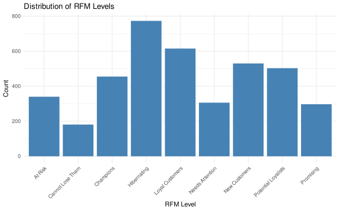

In this section we will create the data preprocessing steps for the Events table in Power Query. First we need to load the data. In Power Query the data is loaded from the Excel file directly and stored in the dataset variable.
# Save events to csvoutput |>write.csv("Events.csv", row.names =FALSE)
2 RFM Segmentation
Here is the R code for RFM analysis that can be implemented in Power Query.
First, we load the preprocessed Events table from the previous step to the dataset variable. In Power Query this will be done by referencing the Events table.
# Read back the csv filedataset <-read.csv("Events.csv")
Next chunk will contain the R code for RFM analysis.
library(ggplot2)ggplot(output, aes(x = RFM_Level)) +geom_bar(fill ="steelblue") +theme_minimal() +labs(title ="Distribution of RFM Levels", x ="RFM Level", y ="Count") +theme(axis.text.x =element_text(angle =45, hjust =1))

3 ABC/XYZ Segmentation
Here is the R code for ABC/XYZ analysis that can be implemented in Power Query.
First, we store the preprocessed Events table from the previous step in the dataset variable. In Power Query this will be done by referencing the Events table.
dataset <-read.csv("Events.csv")
Next chunk will contain the R code for ABC/XYZ analysis.
library(dplyr)library(tidyr)# Assuming 'dataset' is the preprocessed Events tabledataset <- dataset |>mutate(event_date =as.POSIXct(event_date,format ="%d.%m.%Y %H:%M:%S", tz ="UTC" ))# Define the reference date as the latest event date in the datasetlastest_date <-max(dataset$event_date, na.rm =TRUE)output <- dataset |>group_by(product_id) |>summarise(Total_Sales =sum(net_revenue_usd, na.rm =TRUE),Avg_Sales =mean(net_revenue_usd, na.rm =TRUE),SD_Sales =sd(net_revenue_usd, na.rm =TRUE),CoV =ifelse(Avg_Sales !=0, SD_Sales / Avg_Sales, 0) ) |>ungroup()# ABC Classification based on Total Salesoutput <- output |>arrange(desc(Total_Sales)) |>mutate(Cumulative_Sales =cumsum(Total_Sales),Total_Sales_Sum =sum(Total_Sales),Sales_Percent = Cumulative_Sales / Total_Sales_Sum,ABC_Class =case_when( Sales_Percent <=0.8~"A", Sales_Percent <=0.95~"B",TRUE~"C" ) ) |>select(-Cumulative_Sales, -Total_Sales_Sum, -Sales_Percent)# XYZ Classification based on Coefficient of Variationset.seed(123)km <-kmeans(output$CoV, centers =3)output$XYZ_Class <-c("X", "Y", "Z")[km$cluster]means <-tapply(output$CoV, km$cluster, mean)mapping <-order(means)output$XYZ_Class <-c("X", "Y", "Z")[mapping[km$cluster]]output <- output |>mutate(ABC_XYZ_Class =paste0(ABC_Class, XYZ_Class))output |>head()
# A tibble: 6 × 8
product_id Total_Sales Avg_Sales SD_Sales CoV ABC_Class XYZ_Class
<chr> <dbl> <dbl> <dbl> <dbl> <chr> <chr>
1 PROD0002 1643363. 3395. 3538. 1.04 A Y
2 PROD0100 989869. 2106. 2473. 1.17 A Y
3 PROD0078 962684. 2044. 2414. 1.18 A Y
4 PROD0004 962662. 2057. 2850. 1.39 A Z
5 PROD0054 959471. 2020. 2521. 1.25 A Z
6 PROD0076 959272. 2050. 2470. 1.20 A Z
# ℹ 1 more variable: ABC_XYZ_Class <chr>